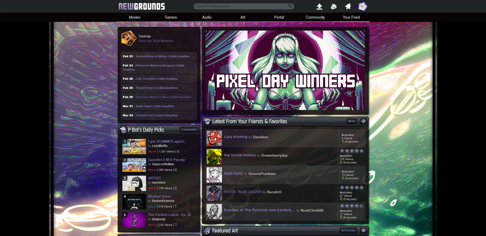
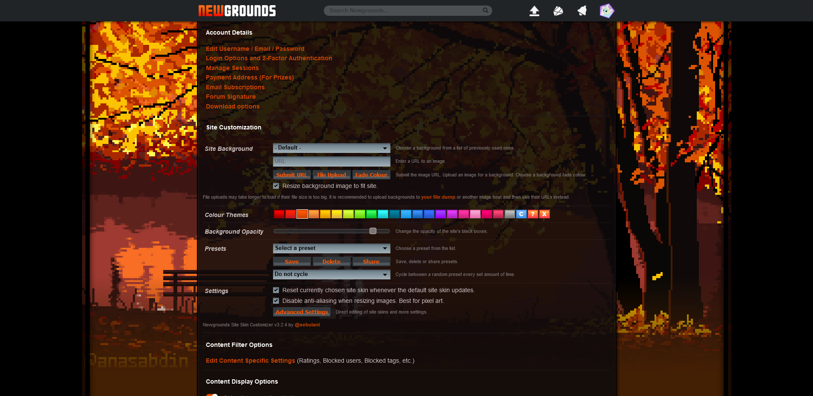
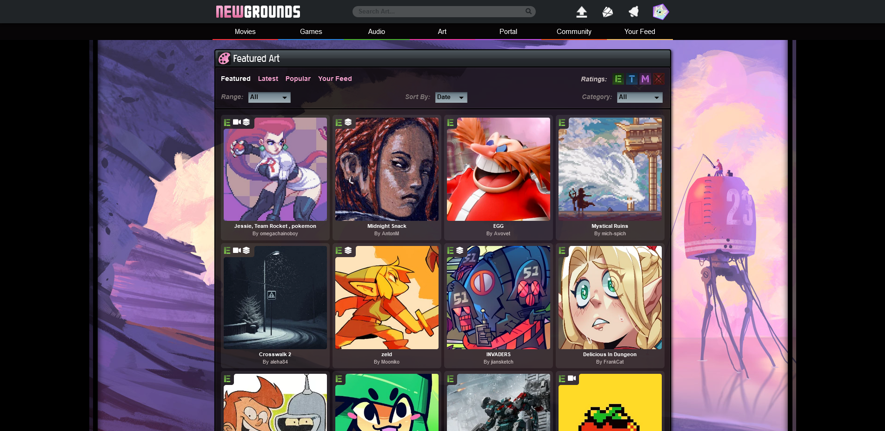
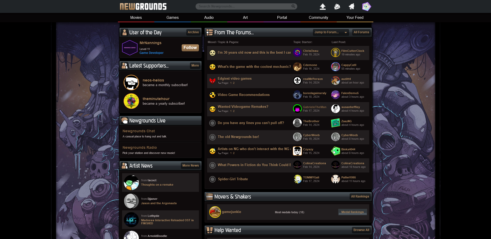

Newgrounds Site Skin Customiser
NGSS is a userscript which lets you change the look of Newgrounds to whatever you want. You can choose backgrounds from a list of previously used site skins or upload your own. You can also customise other parts of the site too.
Currently this script isn't public yet. The extension is still missing a few things and also has a couple bugs I want to fix. Also, a site background changer will eventually be a supporter-only feature on the site, so I'm hesitant to have this thing be public (Tom did give me permission to share regardless though).
{kind=link}
If you want early access, make a site skin, put it on the art portal, then send it to me. I will then give you a download link and also include the skin as a built-in option if you want. Put effort into it though, if you shit out something that took you like 10 minutes I won't include it.
Features:- Changeable background image
- Changeable text and icon colour theme
- Transparent background
- Presets that can be imported/exported
- More features that are listed at the bottom of the page
Installation:
- Install the extension Tampermonkey (or any other compatible userscript extension)
- Press download below to install the script
- Go to your Newgrounds account settings and you will see all the customization options
Examples:

Background art by @Metraberryy

Background art by @AnasAbdin

Background art by @GRIS9

Background art by @Shamfoo
Full feature list:
- Changeable site background:
- Choose background from list of old site skins (and unofficial skins if enabled in advanced settings)
- Enter URL to an image to use as a background
- Upload an image from your PC to upload as a background
- You can also change the fade colour at the bottom of the page
- Backgrounds that don't fit the site can be automatically rescaled
- Pixel art backgrounds can have anti-aliasing disabled
- Supports animated images too
- Changeable text and icon colours
- You can choose between the options that you would normally have when changing your profile's colour scheme
- You can also set your own custom colour too
- There is a "random" option which will change the colour every time you load a new page
- Adjustable background opacity
- Custom presets
- You can create a preset containing your current background, colour theme, opacity, fade colour and more
- Makes it easy to swap between custom site skins
- You can have your currently selected preset change over set periods of time (WIP)
- Presets can be exported and imported, so you can share them with others
- Reset your currently chosen site skin whenever the sites default skin updates
- Advanced settings
- Direct editing of hex values that control the sites colour theme
- Enable unoffical/community made site skins in the skin selection dropdown
- Importing/exporting of all chosen settings. Useful if you use multiple browsers/devices
This script is made to work with Firefox, but it will work with other browsers too. That being said, if you find any bugs please let me know and I'll try and fix them :)